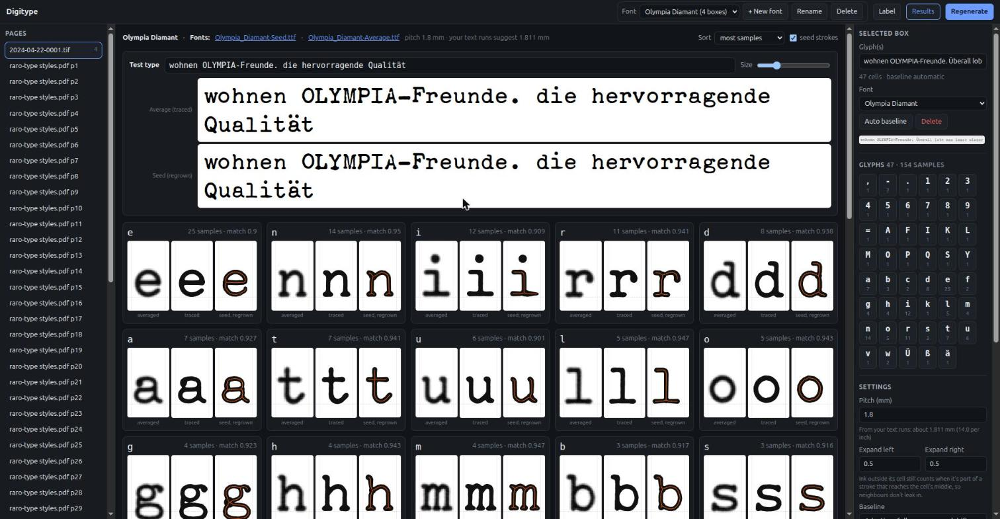
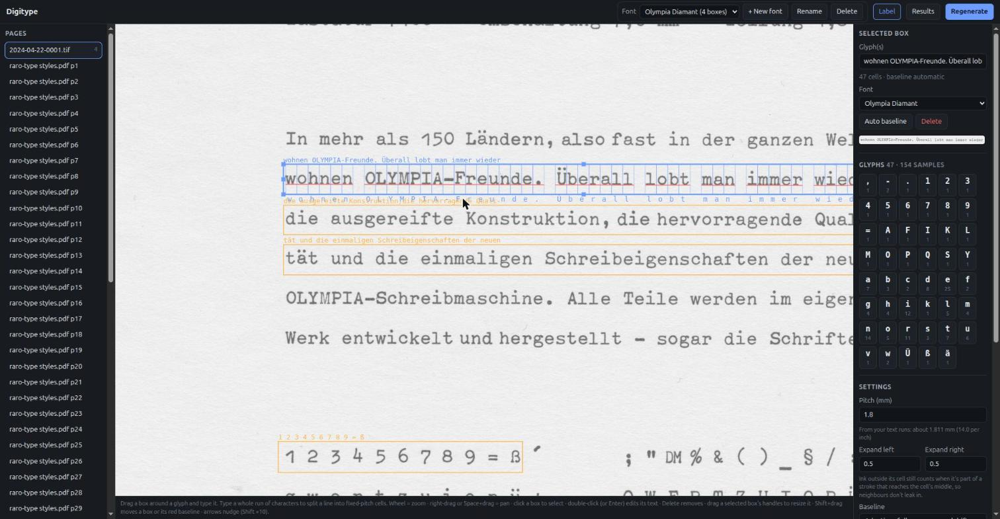
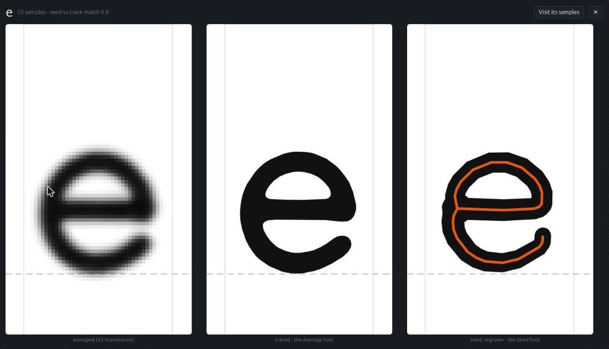
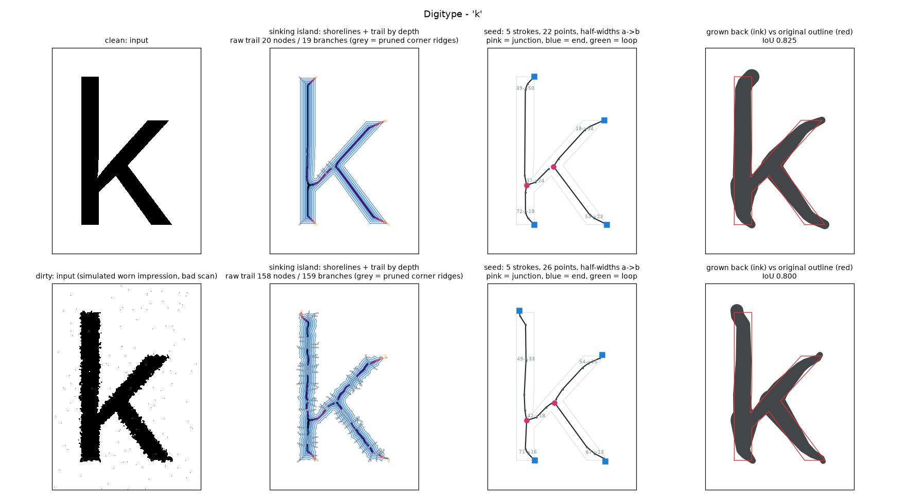

Turn scans of typewriter type samples - dirty, skewed, at any resolution - into clean, installable monospaced fonts. Show it where each character is; it averages every impression, traces it, and rebuilds it.

A typewriter prints every character in a cell of the same width. Digitype uses that: label whole lines of text, and every common letter gets many samples to average.
Drag a box around a line and type what it says. It splits into fixed-pitch cells and warns when the text doesn't match the ink.
Baselines follow skewed and wavy lines; samples are levelled, scaled to one size and registered to each other.
Every impression of a letter is averaged - dirt is different every time, the letter isn't. Odd samples are left out.
The average is traced, and also reduced to a skeleton and grown back, for two versions of the face.
Two true monospaced TrueType fonts, ready to install and use - or to cut new typewriter elements from.
Type a line exactly as printed and it becomes dozens of samples at once.


Each glyph comes out three ways, all at one common scale:
Lower a letter into water a little at a time. Where the shore from two sides meets and goes under, it leaves a trail; the depth at which each point went under is the stroke's half-width. Trail plus depth is the letter's seed - and a disc of that width at every point gives the letter back.
Dirt barely moves the trail. Specks leave short, shallow trails that are pruned; junctions and stroke ends show up as the island splits and vanishes. More on how it works.

Scans of one face at different sizes are scaled to match and weighted by sharpness.
Soft, sub-pixel edges and adaptive smoothing make single samples nearly as clean as averages.
Adaptive baselines and tilt correction follow crooked lines.
Umlauts, i-dots and % circles are kept; dots from neighbouring lines aren't.
Warns when a line's text doesn't match its ink, and leaves out samples unlike the rest.
Type a line and see it in both new fonts straight away.
Python 3.10+. Everything runs locally; nothing is uploaded anywhere.
git clone https://github.com/dairyking98/Digitype cd Digitype python3 -m venv .venv .venv/bin/pip install -r requirements.txt .venv/bin/python3 -m digitype label "path/to/your/scans"
On Windows, run.bat "D:\Scans\Type Samples" sets everything up on first run. Then open
http://127.0.0.1:8770, draw a box, type what it says, and press Regenerate.